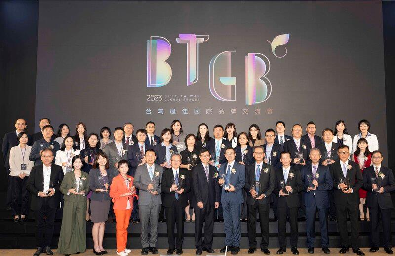

ASUS Tops Interbrand's List of Best Taiwan Global Brands for 2023
TAIPEI, Taiwan, November 28, 2023 —ASUS today announced that it has been named by Interbrand as Best Taiwan Global Brand for 2023. This is the tenth year that ASUS has been recognized as the most valuable global brand in Taiwan. Brand value for ASUS in 2023 was US$2.201 billion, marking a 2% increase from last year.
"It is an honor to be recognized by Interbrand as Taiwan's most valuable global brand for the tenth time. With innovation in our DNA and the synergy of ASUS employees, we will continue to strive for excellence inspired by our collective wisdom," said ASUS Co-CEO S.Y. Hsu.
ASUS Co-CEO Samson Hu added, "As a global technology leader, ASUS incorporates sustainability development as an integral part of our decision-making process to make a positive contribution to society. Focusing on fundamentals and results, we are committed to building a sustainable value chain that thrives with all partners."
Best Taiwan Global Brands survey is organized by the Industrial Development Administration, Taiwan Ministry of Economic Affairs. Interbrand, the world’s leading brand consultancy, is commissioned to conduct the survey, evaluating and ranking brands based on brand awareness, customer loyalty, financial performance, and management strategies. Interbrand uses the survey data to identify the Taiwanese companies with the highest brand value, which measures corporate performance and serves as a key indicator of a company's global marketing position.
